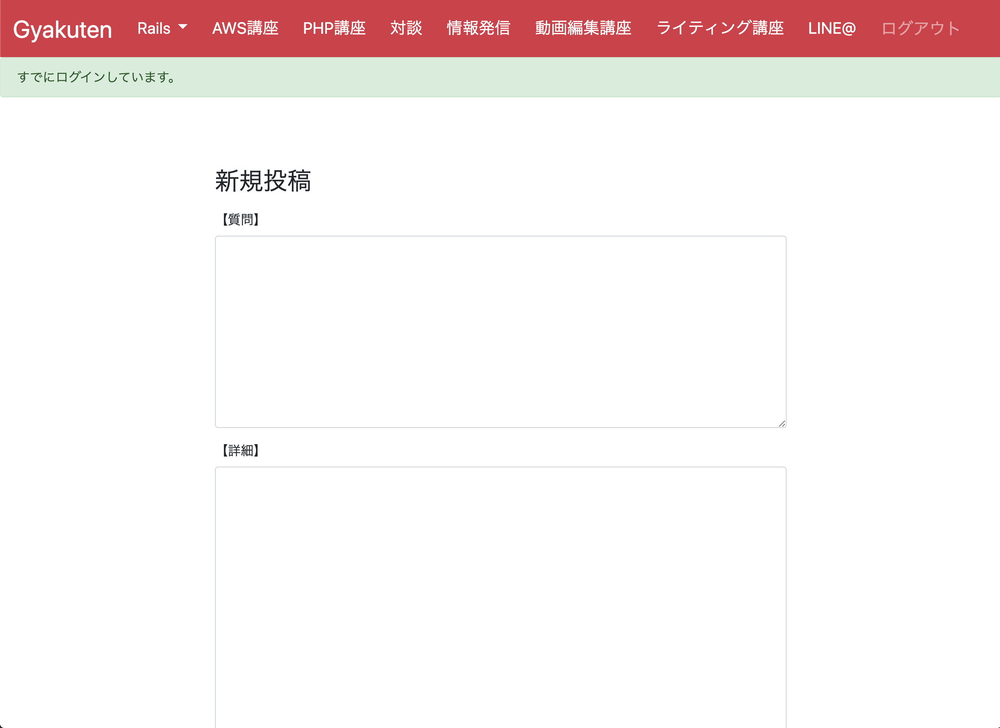

中本雅俊 Portfolio Site
about me
生年月日
1987年10月24日生まれ (32歳)
経歴
-
・2016年3月： 大阪府立大学大学院 (博士後期課程) 生命環境科学研究科 応用生命科学専攻 修了
応用生命科学博士（博士号）取得学部生時代の研究課題を自分の手で完結させたいと考え，博士課程に進学しました。
植物の発生，遺伝子組み換えによる品質改良など様々な研究に携わりました。
当時の課題は，研究室の既存技術では課題に対してアプローチできない事が多かった事。
それに対し，他分野の技術を積極的に取り入れ植物に応用できる様に実験系を構築しました。在籍中に7つの新技術を導入し，今もその技術を使って研究が進められています。
真剣に課題と向き合い、何通りもの条件を検討し実験系を確立しました。
結果を考察し改善策を見つけ出す癖が身につきました。 -
・2016年4月： 奈良先端科学技術大学院大学 情報科学研究科（研究員）就職
大阪府立大学 生命環境科学研究科（研究員 兼務）研究員として奈良先端科学技術大学院大学に就職をしました。
この期間に3つのプロジェクトでチームリーダーを務めました。
チームリーダーとして，情報共有に特に力を入れました。
「予備知識無しでもわかる様に伝える」「目的を明確にする」「話しやすい環境作り」を徹底して行いました。
円滑なコミュニケーションを進めた結果，進捗効率が上がり新規プロジェクトにもかかわらず１年以内に特許申請にまで至りました。
1人よりもチームで成果を出せた時に，より達成感と価値を感じます。 - ・2018年3月 ： 奈良先端科学技術大学院大学 退職
-
・2018年4月 ： 立命館大学 薬学部（助教) 就職
前職の任期満了に伴い，立命館大学 薬学部に転職しました。
植物の遺伝子発現データを解析し，プログラミングスキルに触れました。
課題をシステマティックに解決できるプログラミングに可能性を感じ学習を開始しました。 - ・2020年 1月 ：立命館大学 退職
- ・現在転職活動中
学習したプログラミングスキル
2019年9月20日から現在まで継続して学習を続けています。
- ・HTML, CSS, SCSS
- ・JavaScript, jQuery
- ・PHP
- ・Ruby, Ruby on Rails
- ・Git, GitHub
※成果物については下記参照ください
どの様な業務をしたいか
人が抱える課題を解決するためのプロダクト開発に携わりたいです。
・常にユーザーが使い易いサービスを目指します
・より多くのユーザーに喜んでもらえるサービスを目指します
・より多くの人に愛されるサービスを目指します
どの様なエンジニアになりたいか
研究活動を通して技術により人の役に立つことに喜びを感じました。
研究職を辞めてまでIT企業を志た理由は，「IT を駆使したサービスに携わる事で，より多くの人の役に立つ事ができる」と考えたからです。
1.課題解決
暮らしや働き方をより便利に，効率的にする事ができるのがITだと考えています。
従来のやり方を考え直し，より生産的に改善出来るようなサービスを提案するために積極的に行動していきます。
私の解決したい課題：実家やその周りの中小農家さんの利益率を上げる
2.ヒアリング
どんなに自分がいいものだと思っていても，ユーザーのニーズに沿っていなければ使ってもらえません。
そのために私が作るプロダクトは，ユーザーからの意見の聞き取りを最も大切にしています。
ポートフォリオの「ひらがなどうぶつ」は実際に子供や親御さんに使ってもらい使用感を聞いて改良を重ねてきました。
3.価値を生み出す
どんなに良いサービスでも使ってもらえないと価値を生み出す事ができません。
サービスを支持して使ってもらう為には，認知度や影響力を持つ事が現在とても重要であると考えます。
その為に，得た知識はSNSを通して積極的に発信・共有していきます。
JavaScript
ひらがなどうぶつ
アプリの概要
ひらがなを覚え始めた4歳の甥っ子のために作りました。
- ・ひらがな学習アプル
- ・ランダムに動物のイラストが現れる
- ・正解を含む8文字の平仮名から動物の名前を入力する
- ・10 秒後にヒントが現れる
- ・BGM とボタンのクリック時に効果音が流れる
ソースコード
GitHub(ひらがなどうぶつ)こだわりポイント
- ・動作のほとんどを Javascript が担当
- ・データベースからのデータの取り出しと加工に Ruby & Rials を使用
- ・CSV形式でデータをインポートできるように task を作成
- ・甥っ子やサロンのメンバー，居酒屋で一緒になったご家族などに触ってもらい意見をもらった
- ・Twitterを通してカタカナバージョンの作成を受注
ユーザーの感想
- ・1画面に収まるように → 修正
- ・ヒントが出ると良い → ヒント機能を追加
- ・音が出ると子供が飽きない → 効果音・BGM を実装
- ・リロード無しで更新できると良い → Ajax の実装（現在改良中）
Ruby on Rails
EventChat
アプリの概要
同じイベントに参加した人の交流を促す目的でこのアプリを作成しました。
- ・イベントの管理アプリ（参加者募集，参加登録）
- ・イベント単位でチャットルームが存在し，交流する事ができる
- ・Twitter アカウントとの連携・ログイン
- ・Twitter 連携することで Twitter プロフィールを反映する事ができる
- ・イベントの詳細情報はマークダウン形式で入力可能
ソースコード
GitHub(EventChat)こだわりポイント
- ・初めて自作した CRUD アプリ
- ・基本的なアソシエーションを実装
- ・Action Cable を使用してリアルタイムチャット機能を実装
- ・Twitter API を使用（外部サービスとの連携に挑戦）
- ・レスポンシブ対応
- ・AWS にデプロイ
- ・実装する機能ごとに brnch を作成し，GitHub のプルリク画面で詳細を記録
- ・ユーザー間の交流を促す目的で，マイページからユーザーの Twitter ページに飛べるように設計
- ・イベント詳細内容を簡単かつ綺麗にするためマークダウン記法を採用
使用した Gem
- ・devise (ログイン機能)
- ・omniauth-twitter（Twitter ログイン）
- ・twitter（Twitter API 利用）
- ・carrierwave（画像投稿機能）
- ・rmagick（画像投稿機能）
- ・redcarpet（マークダウン機能）
- ・coderay（シンタックスハイライト）
- ・ransack（検索機能）
- ・kaminari（ページネーション）
- ・pry-byebug（デバッグ）
共同開発
制作したアプリのイメージ
アプリの概要
4人1組による共同開発を経験しました。
- ・所属するサロンの Web ページ(Rails)のクローンサイトをサロンのメンバーと共同で作成
- ・PM＋4人チームで共同開発で制作
こだわりポイント
- ・所属するオンラインサロンのメンターがPMとなり、サロンメンバー４名で Web ページを開発
- ・trello でタスク管理。Slack を使用してコミュニケーション。
- ・ローカル環境でbranch を切って開発，プルリク，コンフリクトの解消の流れを学習
- ・変更箇所をメンバーに分かりやすく伝える事を意識してプルリクを作成
- ・利便性を考えてオリジナルサイトに無い Flash などの機能を追加
個人サービス
カタカナサラ
サービスの概要
「ひらがなどうぶつ」をもとにカタカナバージョンの作成を受注しました。
- ・ユーザー（4歳）に気に入ってもらえるように，好みをヒアリング
- ・好みに合わせて，見た目，イラスト，効果音を変更
- ・１日以内にプロトタイプを納品
- ・必要な機能をヒアリングし追加 → 開発中
- ・起動を早くするため，最終的に AWS にデプロイ → 開発中
ソースコード
GitHub(カタカナサラ)ユーザーの感想
- ・カタカナの学習を楽しむことができた
- ・テキストの教材の倍学習する事ができる
- ・表示するイラストのジャンルを選択できると良い → 開発中
→積極的な企画力、提案力、実行力があります！
Others
プログラミング講師
課題レビューのやりとり
概要
2020年2月より所属サロンで Ruby, Ruby on Rails 課題レビュワーをしています。
- ・2020年2月に所属サロンのレビュワーに抜擢
- ・６月までに約150人のコードをレビュー
- ・毎日 Slack を通して送られてくる課題に12時間以内にレビュー
こだわりのポイント
- ・教える為に詳しく知る必要があるので，自信の勉強になっている
- ・初学者のつまづき易いポイントが理解できる
- ・分かりやすく説明する為に，コードのロジックを整理する癖がついた
→コミュニケーションをとりながら，人の役に立つ事が得意です！
Zoom もくもく会主宰
もくもく会の様子

平日の午後にもくもく会を開催しています。
- ・所属サロン内で呼びかもくもく会を開催
- ・サロンの課題やポートフォリオ作成の相談などを受け付ける
- ・最後の15分ほどで，学習の進捗状況など意見交換を行う
こだわりのポイント
- ・画面越しだが対面で話せる場を作る事で，生の声が聞ける
- ・テキストでは伝わりにくい事も説明できる
- ・毎日開催する事で，自分がサボらない環境をつくる
→自ら努力できる環境を工夫して作り上げていく事ができます。
執筆物
CSS SCSS 教材
- ・初学者に向けて CSS SCSS 基礎教材を執筆
- ・最低限必要な知識に絞って纏める
- ・合計で33,560文字の教材が完成
Qiita 記事
- ・自分が調べた時に情報が少かった事を中心に，Qiita に投稿
- ・LIKE が少しずつ増えるのでやる気に繋がる
→これからも学習して得た知識は，どんどん共有していきます。
サービスの企画
釣具レンタルサービス（イメージ）
サービス概要
- ・釣具のレンタルサービス
- ・ユーザーは使用頻度の少ない釣具を登録し貸し出す事ができる
- ・ユーザーは登録された釣具の中から期限付きで借りる事ができる
解決したい課題
- ・釣具は実際に買って使わないと自分に合ったものか判断する事が難しい
- ・しかしながら，釣具は高価な物が多いため幾つも買い揃えるのは難しい
- →購入前に試用する機会があれば，効率的に道具を選ぶ事ができる
- →あまり使用していない道具から収益化できる
こだわりのポイント
- ・趣味の「釣り」から着想を得る
- ・イメージサイトを作成
- ・実際にレンタルサービスを行っているお店に行ってサービスの実態の聞き込みをした
- →最新製品は在庫を確保する事が難しく，レンタル品は型落ちの物が多い。そのためレンタルサービスを利用する人は道具を持っていない初心者の人が多い
- ・多くの人が利用してくれて初めて成立するサービスなので，まずは自分のものを貸し出すマイクロサービスとして展開する予定
→積極的に新しい事に挑戦する行動力があります！